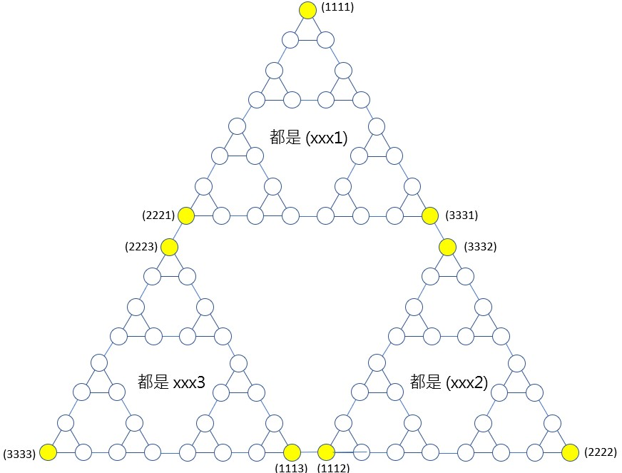

河內塔
November 28, 2021河內為越戰時北越的首都，現在的胡志明市；1883 年法國數學家 Edouard Lucas 曾提及河內之塔（Towers of Hanoi）故事，據說創世紀時 Benares 有座波羅教塔，是由三支鑽石棒（Pag）支撐，神在第一根棒上放置 64 個由上至下依由小至大排列的金盤（Disc），命令僧侶將金盤從第一根石棒移至第三根石棒，搬運過程遵守大盤在小盤之下的原則，若每日僅搬一盤， 當盤子全數搬運完畢之時，此塔將毀損，也是世界末日來臨之時。
解法思路
如果柱子標為 A、B、C，要由 A 搬至 C，只有一個盤子時，將之直接搬至 C，有兩個盤子，使用 B 作為輔助柱。
如果盤數超過 2 個，將第三個以下的盤子遮起來就簡單了，每次處理兩個盤子，也就是：A -> B、A -> C、B -> C這三個步驟，而被遮住的部份，其實就是進入程式的遞迴處理。
若有 n 個盤子，移動完畢需要次數為 2ⁿ - 1，因此盤數為 64 時，需次數為 18446744073709551615，每天搬一盤，約需 505390248594782 個世紀，就算是每秒搬一盤，也要約 5850 億年左右。
程式實作
#include <stdio.h>
void hanoi(int n, char A, char B, char C) {
if(n == 1) {
printf("Move sheet from %c to %c\n", A, C);
}
else {
hanoi(n-1, A, C, B);
hanoi(1, A, B, C);
hanoi(n-1, B, A, C);
}
}
int main() {
int n;
printf("請輸入盤數：");
scanf("%d", &n);
hanoi(n, 'A', 'B', 'C');
return 0;
}
import java.util.*;
import static java.lang.System.out;
public class Hanoi {
static class Move {
char from, to;
Move(char from, char to) {
this.from = from;
this.to = to;
}
}
List<Move> solve(int n) {
moves = new ArrayList<Move>();
move(n, 'A', 'B', 'C');
return moves;
}
private List<Move> moves;
private void move(int n, char a, char b, char c) {
if(n == 1) {
moves.add(new Move(a, c));
} else {
move(n - 1, a, c, b);
move(1, a, b, c);
move(n - 1, b, a, c);
}
}
public static void main(String args[]) {
out.print("請輸入盤數：");
Hanoi hanoi = new Hanoi();
int n = new Scanner(System.in).nextInt();
for(Move move : hanoi.solve(n)) {
out.printf("盤由 %c 移至 %c%n", move.from, move.to);
}
}
}
def hanoi(n, A, B, C):
if n == 1:
return [(A, C)]
else:
return hanoi(n-1, A, C, B) + hanoi(1, A, B, C) + hanoi(n-1, B, A, C)
n = input("請輸入整數：")
for move in hanoi(int(n), 'A', 'B', 'C'):
print("盤由 %c 移至 %c" % move)
def hanoi(n, A, B, C):
if n == 1:
return [(A, C)]
else:
return hanoi(n-1, A, C, B) + hanoi(1, A, B, C) + hanoi(n-1, B, A, C)
n = input("請輸入整數：")
for move in hanoi(int(n), 'A', 'B', 'C'):
print("盤由 %c 移至 %c" % move)
# encoding: UTF-8
def hanoi(n, a, b, c)
if n == 1
[{from: a, to: c}]
else
hanoi(n - 1, a, c, b) + hanoi(1, a, b, c) + hanoi(n - 1, b, a, c)
end
end
print "請輸入整數："
hanoi(gets.to_i, "A", "B", "C").each do |move|
print "盤子從 #{move[:from]} 移動至 #{move[:to]}\n"
end
function hanoi(n , a, b, c) {
if(n === 1) {
return [{from : a, to : c }]
}
return hanoi(n - 1, a, c, b).concat(
hanoi(1, a, b, c),
hanoi(n - 1, b, a, c)
);
}
hanoi(3, 'A', 'B', 'C').forEach(function(move) {
print('盤從 ' + move.from + ' 移至 ' + move.to);
});
import Text.Printf
hanoi 1 a _ c = [(a, c)]
hanoi n a b c = hanoi (n - 1) a c b ++ hanoi 1 a b c ++ hanoi (n - 1) b a c
main = do
putStrLn "Please enter a number: "
n <- getLine
sequence [printf "Move from %c to %c\n" from to
| (from, to) <- hanoi (read n) 'A' 'B' 'C']
hanoi(1, A, _, C, [[A, C]]).
hanoi(N, A, B, C, Result) :- NP is N - 1,
hanoi(NP, A, C, B, R1),
hanoi(1, A, B, C, R2),
hanoi(NP, B, A, C, R3),
append([R1, R2, R3], Result).
show([]) :- nl.
show([H|R]) :- writef("Move from %n to %n\n", H), show(R).
main([Arg0|_]) :-
atom_number(Arg0, N),
hanoi(N, a, b, c, Result),
show(Result).
# 我寫的玩具語言 https://github.com/JustinSDK/toy_lang
def hanoi(n, a, b, c) {
if n == 1 {
println('Move sheet from {0} to {1}'.format(a , c))
}
else {
hanoi(n - 1, a, c, b)
hanoi(1, a, b, c)
hanoi(n - 1, b, a, c)
}
}
hanoi(3, 'A', 'B', 'C')
延伸思考
如果我說，遞迴是個很可愛的東西，許多人多半會不同意，遞迴只應天上有嘛！
若你不覺得遞迴可愛，那多半是把自己當成電腦在想問題了，既然如此，那就當徹底一點，完全不使用遞迴來解河內塔如何？
不遞迴的河內塔
先試著不使用遞迴來處理單色河內塔，如果是 n 個盤，可以直接把最上面的盤搬到右柱，就當成是最上層的盤處理完畢了嗎？
不行！因為這必然造成之後大盤凌駕於小盤之上。因此，你需要暫時將目前狀態放到一個袋子，並在上頭標號，然後變換目標柱，該動作必須持續到能把最下面的盤搬到目標柱為止，這時會有 n-1 有編號的袋子，從最後一個袋子中取出盤子狀態，將盤子移至目標柱，接下來，又得將盤子狀態放到另一個袋子裏了……
知道嗎？袋子就是在模擬電腦進行遞迴呼叫時，函式的狀態堆疊，如果函式中只遞迴呼叫自身一次，使用堆疊來模擬遞迴過程的話，基本上需要一個堆疊，單色河內塔遞迴解會在函式中，呼叫自身兩次，這需要兩個堆疊，把自己當成電腦來思考的話，就得小心堆疊中狀態的儲存與取出順序，才能正確地解決問題，無疑地，這是個繁瑣的過程，底下列出解題程式碼作為參考：
def hanoi(n, a, b, c):
param_stack_recursion2 = [[n, a, b, c]]
while param_stack_recursion2:
m, pa, pb, pc = param_stack_recursion2.pop()
param_stack_recursion1 = []
while True:
if m == 1:
print(pa, pc) # hanoi(1, A, B, C)
# hanoi(m - 1, A, C, B) is completed
leng = len(param_stack_recursion2)
while param_stack_recursion1:
m = m + 1
sa, sb, sc = param_stack_recursion1.pop()
# hanoi(m - 1, B, A, C)
param_stack_recursion2.insert(leng, [m - 1, sb, sa, sc])
if param_stack_recursion2:
_, mb, ma, mc = param_stack_recursion2[-1]
print(ma, mc) # move A to C
break
param_stack_recursion1.append([pa, pb, pc])
# hanoi(m - 1, A, C, B)
m = m - 1
pa, pb, pc = pa, pc, pb
hanoi(4, 'A', 'B', 'C')
這樣你還會覺得遞迴不好理解嗎？
基於格雷碼的河內塔
當然，有些情況下，遞迴處理不是萬靈丹，通常相對來說，耗費的資源比較多，像是堆疊本身就需耗費記憶體，許多語言也會限制遞迴次數；有時為了效率，也必須試著找出其他方式來解題，或者試著記錄任務之間的狀態。例如，動態規畫演算時，為了避免子任務的重複計算，必須記錄子任務的最佳解，以便有效率地解決問題（記錄子任務狀態會比較適合，可以的話，儘量避免記錄父任務狀態，以免程式變得更複雜）。
以河內塔來說，存在不遞迴亦不使用堆疊模擬的解法，這來自於觀察遞迴版本的兩次遞迴呼叫間，會有一次將盤子從當次的左柱移至右柱的動作，這是一個節點，而前後兩次遞迴，會分別是個可展開的子樹，或者無法展開時，各是一個末端節點。簡單來說，將整個遞迴過程依此繪出，會是一棵二元樹，而搬運過程，就是走訪左樹、印出目前節點、走訪右樹的過程。
依上所述，若在每個節點記錄盤子編號、從幾號柱移至幾號柱，然後建出二元樹並走訪，就可獲得解答。
不過，談到二元樹的建立與走訪，使用遞迴來實作，還是比較方便的，若不想使用遞迴，程式實作的複雜度就又會加深了，有沒有辦法觀察到進一步的規律以簡化實作呢？
如果試著畫出二元樹並觀察走訪順序，當 n 為 4 時，移動的盤子編號順序，會是：1、2、1、3、1、2、1、4、1、2、1、3、1、2、1，數字左右對稱，感覺具有規律性，就結論而言，如果用二進位寫出這些數字，會發現相鄰數字間只有一個位元不同，這符合格雷碼（Gray code）的定義，只要能實作出產生這種格雷碼的產生（格雷碼不只一種），就能得到盤子的移動順序。
接著，觀察來源與目標柱。如果將柱子編號為 1、2、3，並逆時針依序排列柱子，會發現如果某末端節點移動盤子時，是逆時針往下個柱子的話，該某層也都會是逆時針，而父節點該層，就都會是順時針往下個柱子，n 個盤子就會有 n 層，n 為偶數時，就是逆時針，奇數就是順時針。再接下來，就是將這些規律都實作出來了，底下列出解題程式碼作為參考：
def is_even(n):
return n % 2 == 0
def which_disk(n):
c = n ^ (n + 1)
i = 0
while c != 0:
c = c >> 1
i = i + 1
return i
def hanoi(n):
number_of_moves = 2 ** n - 1
dir = [1, 0] if is_even(n) else [0, 1]
pin = [1] * number_of_moves
for i in range(0, number_of_moves):
disk = which_disk(i)
p_idx, d_idx = disk - 1, disk & 1
next = (pin[p_idx] + dir[d_idx]) % 3 + 1
print(pin[p_idx], next)
pin[p_idx] = next
hanoi(4)
河內塔狀態轉移圖
如果使用 (abc) 來表示小、中、大三個盤子，分別在 a、b、c 柱子，例如：
由於 (111) 可以轉移至 (211) 或 (311)，相對地，(211)、(311) 都可以轉移至 (111)，而 (211) 與 (311) 彼此間也可以轉換，若將可轉換的兩個狀態間連線，構成以下的三角形：
如果將三個盤子全部的狀態轉換，依上圖編號連線，會出現以下結果：
可以看到 (222) 與 (333) 狀態，就是三個盤子都在柱 2 或柱 3 的狀態，這種狀態圖，是理解河內塔解法的一種視覺化方式，將狀態圖特別畫為三角形，是因為這種三角形，又稱為 Sierpinski 三角形。
因為若有 n 個盤子的話，可以用 n 個位數來表示從小至大的四個盤子，分別在哪個柱子上，例如，(1111) 表示四個盤子都在 1 號柱，(2111) 表示最小的盤子在 2 號柱，另三個盤子在 1 號柱…那麼狀態轉移圖會變得更大，例如四個盤子的狀態轉移圖，外觀就會像是：

其中未被列出的狀態碼，可以從方才三個盤子時的狀態圖來推，例如 (xxx) 對應至左下 (xxx3) 相對位置的話，就會是 xxx 全加 1，如果結果大於 3，就取 3 的模數，例如 (211) 相對應的就是 (3223)，而 (311) 相對應的就是 (1223)，依此類推，(xxx) 對應至左下 (xxx2) 相對位置的方式也是相同，從狀態圖也可以理解到解河內塔分而治之（divide and conquer）的道理。